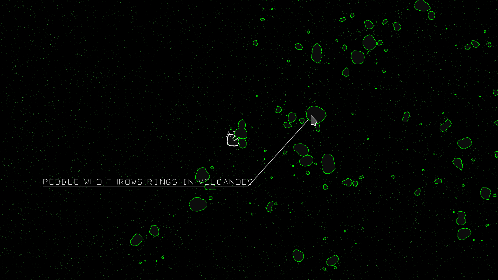
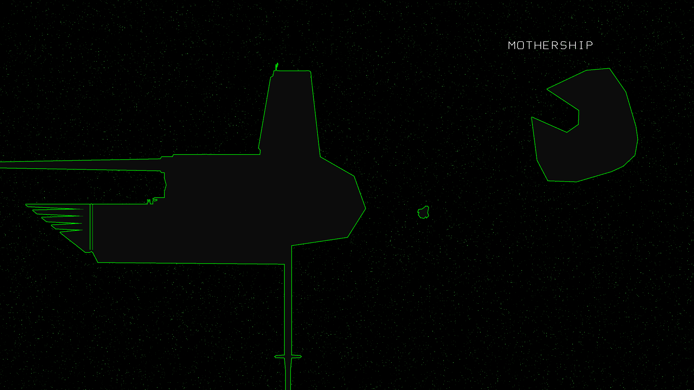
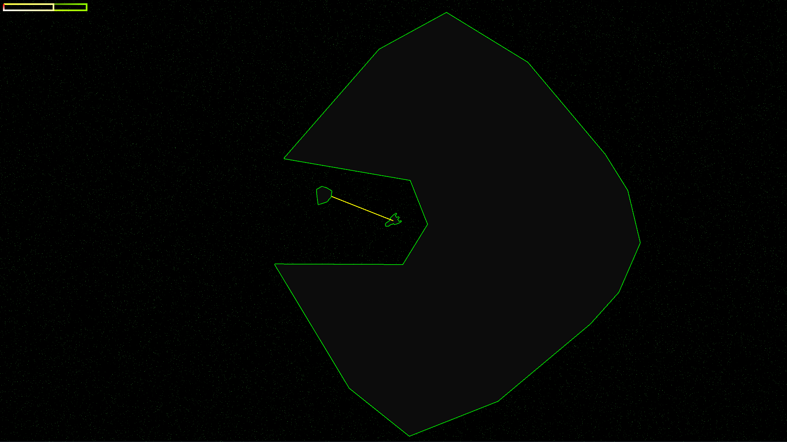
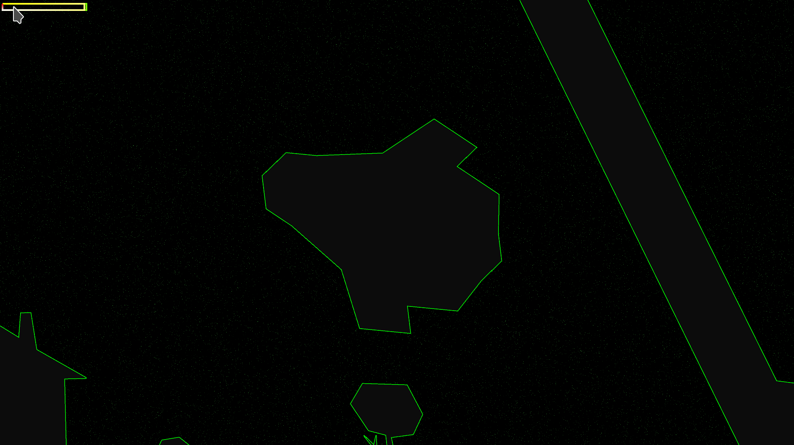
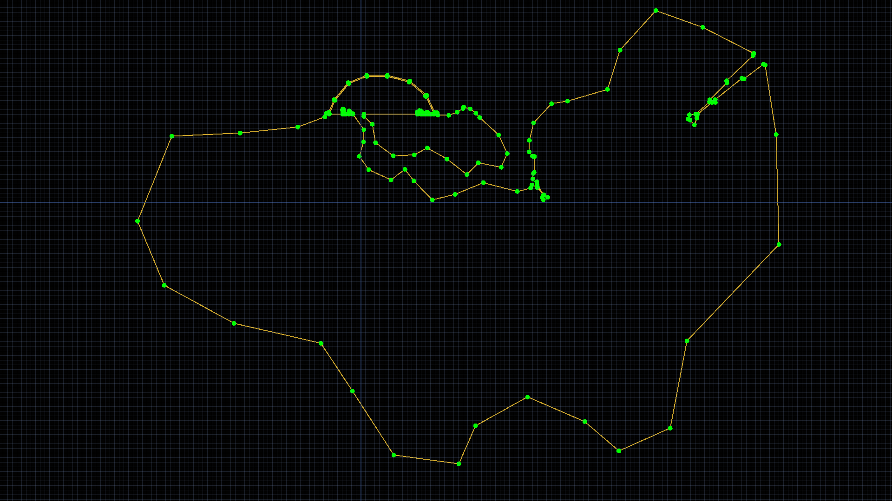

Over 1 million persistent, minable asteroids. This vectrex inspired space sim is a whole new take on the classic Asteroids formula.

In the distant future, a completely isolated pocket of humanity struggles for existence in an unforgiving region of space.
The generation ship that brought them here has been long forgotten save by a few.
Various factions compete and cooperate for resources and technology with ship to ship combat being commonplace.

The core gameplay revolves around mining asteroids for fuel. The player can tether asteroids and tow them into the mouth of the mothership to receive fuel based on their mass.
There are enourmous differences in mass between various ships and between asteroids. Ships also have different propulsion, control, fuel and utility technologies making each type unique to fly.

The positions and velocities of the asteroids are stored in a 1024x1024 RGBA32 image on the GPU. A compute shader updates the positions of all 1m+ asteroids in parrallel every frame. This shader also passes a list of asteroids currently near the player to the CPU so they can be spawned.
When an asteroid is spawned, its ID (pixel coordinate in the texure) is used to seed an algorithm that generates its graphics, name and other properties. This ensures that no two asteroids are the same, while keeping memory usage low.
When an asteroid leaves the area of play, its velocity and position are updated in the texture, and saved to disk upon exiting. This results in a persistent world with the players actions having lasting consequences.

The custom Vectrex style graphics are authored using a custom point data editor also built in Godot 4.